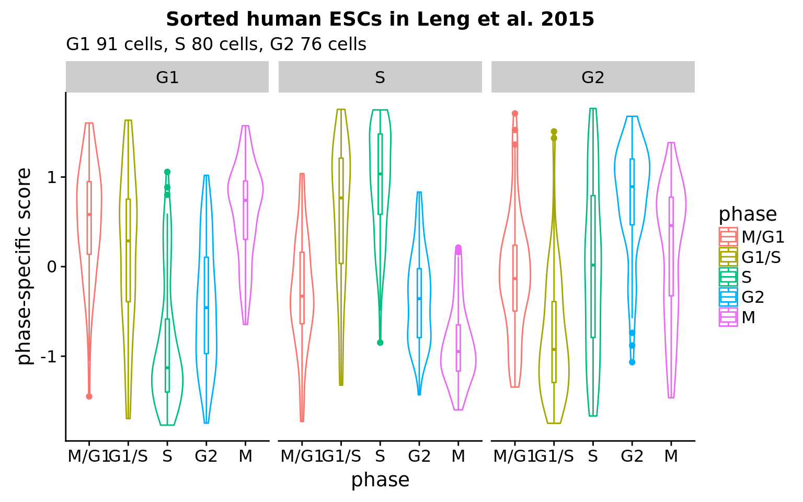

Last updated: 2018-02-07
Code version: ecbb5f4
Goal: What are the expression profiles of the sorted cells in Leng et al. 2015?
Method: Compute phase-specific score Macoscko et al. 2015 using the genes identified as cell cycle genes and also assigned to different cell cycle phases in Macosko et al. 2015. Hence the genes and the samples evaluated are selected from two independent datasets.
Results:
* 120 genes were identified as variable along cell cycle phase.
* G1 cells scored the highest in G1 and also high in M phase. S cells scored the highest in S, while G2 cells scored the highest in G2. Importantly, there appears to be a pattern in average expression levels within each cell state (fucci-assigned). G1 cells peaks at M/G1 and G1/S, S cells peaks at S, while G2 cells peaks at G2.
* Compared to our data ([here](https://jdblischak.github.io/fucci-seq/images-classify-fucci.html)): Across individuals, cells classified to S and G2 phases scored the highest in the corresponding phase score. However, cells classifed as G1 phase score high in S phase for some individuals.
What's clear is that phase-specific scores along are not adequate in predicting cell cycle phase. Packages
library(Biobase)
library(ggplot2)
library(cowplot)
library(data.table)
library(tidyr)
library(ccRemover)Load Leng et al. 2015 data from GEO - already filtered for low-quality samples, and count data was median-normalized.
HumanLengESC <- readRDS(file = "../data/rnaseq-previous-studies/HumanLengESC.rds")
counts <- exprs(HumanLengESC)
libsize <- colSums(counts)
cpm <- t(t(counts)*(10^6)/libsize)
log2cpm <- log2(cpm+1)
pdata <- pData(HumanLengESC)
table(pData(HumanLengESC)$cell_state)
G1 G2 H1 S
91 76 213 80 select fucci-expression cells
counts <- counts[,pdata$cell_state != "H1"]
cpm <- cpm[,pdata$cell_state != "H1"]
log2cpm <- log2cpm[,pdata$cell_state != "H1"]
pdata <- pdata[pdata$cell_state != "H1", ]
pdata$cell_state <- droplevels(pdata$cell_state)filter genes
genes_to_include <- which(rowMeans(cpm)>1)
log2cpm <- log2cpm[genes_to_include,]subset to include genes that are annotated as cell cycle genes (according to ccRemover)
ccremover <- readRDS("../data/cellcycle-genes-previous-studies/rds/macosko-2015.rds")
which_ccremover <- gene_indexer(rownames(log2cpm), species="human", name_type="symbol")
log2cpm_ccremover <- log2cpm[which_ccremover, ]
cpm_ccremover <- cpm[which_ccremover, ]
counts_ccremover <- counts[which_ccremover, ]subset to include genes in Macosko data
macosko <- readRDS("../data/cellcycle-genes-previous-studies/rds/macosko-2015.rds")
which_macosko <- which(rownames(log2cpm) %in% macosko$hgnc)
log2cpm_macosko <- log2cpm[which_macosko, ]
cpm_macosko <- cpm[which_macosko, ]
counts_macosko <- counts[which_macosko, ]
ccgenes_macosko <- macosko[which(macosko$hgnc %in% rownames(log2cpm_macosko)), ]compute phase-specific scores
cc_scores <- lapply(1:uniqueN(ccgenes_macosko$phase), function(i) {
ph <- unique(ccgenes_macosko$phase)[i]
df_sub <- log2cpm_macosko[rownames(log2cpm_macosko) %in% ccgenes_macosko$hgnc[ccgenes_macosko$phase == ph],]
mn <- colMeans(df_sub)
cc <- cor(t(rbind(mn, df_sub)))
cc_mean <- cc[-1,1]
genes_cc <- names(cc_mean)[which(cc_mean > .3)]
scores_raw <- colMeans(df_sub[rownames(df_sub) %in% genes_cc,])
scores_z <- scale(scores_raw)
return(list(scores_z=scores_z, ngenes = length(genes_cc)))
})
names(cc_scores) <- unique(ccgenes_macosko$phase)
ngenes <- sapply(cc_scores, function(x) x[[2]])
print(ngenes) S G1/S M/G1 M G2
10 8 27 43 32 scores <- do.call(cbind, lapply(cc_scores, function(x) x[[1]]))
colnames(scores) <- unique(ccgenes_macosko$phase)
scores_z <- t(apply(scores, 1, scale))
colnames(scores_z) <- unique(ccgenes_macosko$phase)
scores_z <- as.data.frame(scores_z)
scores_z_long <- gather(scores_z, key=phase, value=scores)
scores_z_long$sample_id <- rep(rownames(scores_z), ncol(scores_z))
scores_z_long$cell_state <- pdata$cell_state[match(scores_z_long$sample_id, rownames(pdata))]
R version 3.4.1 (2017-06-30)
Platform: x86_64-pc-linux-gnu (64-bit)
Running under: Scientific Linux 7.4 (Nitrogen)
Matrix products: default
BLAS: /home/joycehsiao/miniconda3/envs/fucci-seq/lib/R/lib/libRblas.so
LAPACK: /home/joycehsiao/miniconda3/envs/fucci-seq/lib/R/lib/libRlapack.so
locale:
[1] LC_CTYPE=en_US.UTF-8 LC_NUMERIC=C
[3] LC_TIME=en_US.UTF-8 LC_COLLATE=en_US.UTF-8
[5] LC_MONETARY=en_US.UTF-8 LC_MESSAGES=en_US.UTF-8
[7] LC_PAPER=en_US.UTF-8 LC_NAME=C
[9] LC_ADDRESS=C LC_TELEPHONE=C
[11] LC_MEASUREMENT=en_US.UTF-8 LC_IDENTIFICATION=C
attached base packages:
[1] parallel stats graphics grDevices utils datasets methods
[8] base
other attached packages:
[1] ccRemover_1.0.4 tidyr_0.7.1 data.table_1.10.4
[4] cowplot_0.9.1 ggplot2_2.2.1 Biobase_2.38.0
[7] BiocGenerics_0.24.0
loaded via a namespace (and not attached):
[1] Rcpp_0.12.14 knitr_1.17 magrittr_1.5 munsell_0.4.3
[5] colorspace_1.3-2 rlang_0.1.4.9000 stringr_1.2.0 plyr_1.8.4
[9] tools_3.4.1 grid_3.4.1 gtable_0.2.0 git2r_0.19.0
[13] htmltools_0.3.6 yaml_2.1.16 lazyeval_0.2.0 rprojroot_1.2
[17] digest_0.6.12 tibble_1.3.3 purrr_0.2.2 glue_1.1.1
[21] evaluate_0.10.1 rmarkdown_1.8 labeling_0.3 stringi_1.1.2
[25] compiler_3.4.1 scales_0.5.0 backports_1.0.5 This R Markdown site was created with workflowr